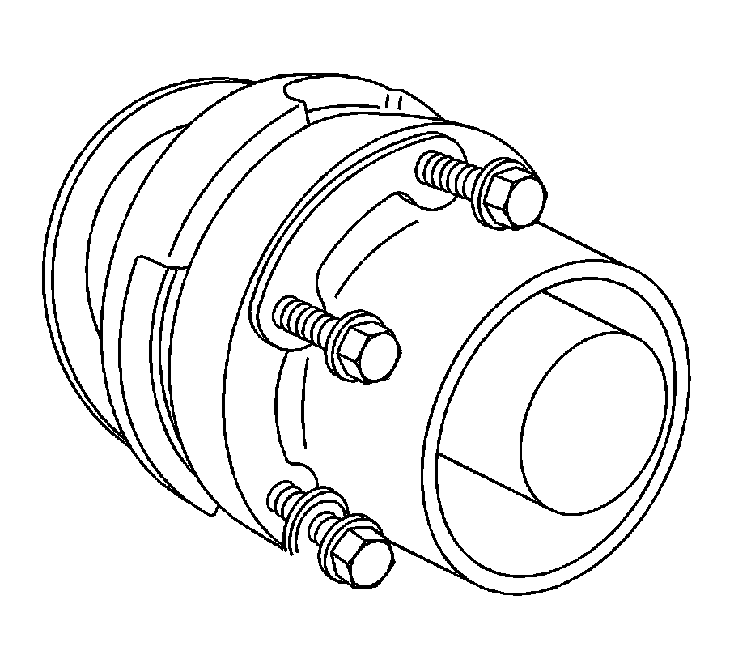
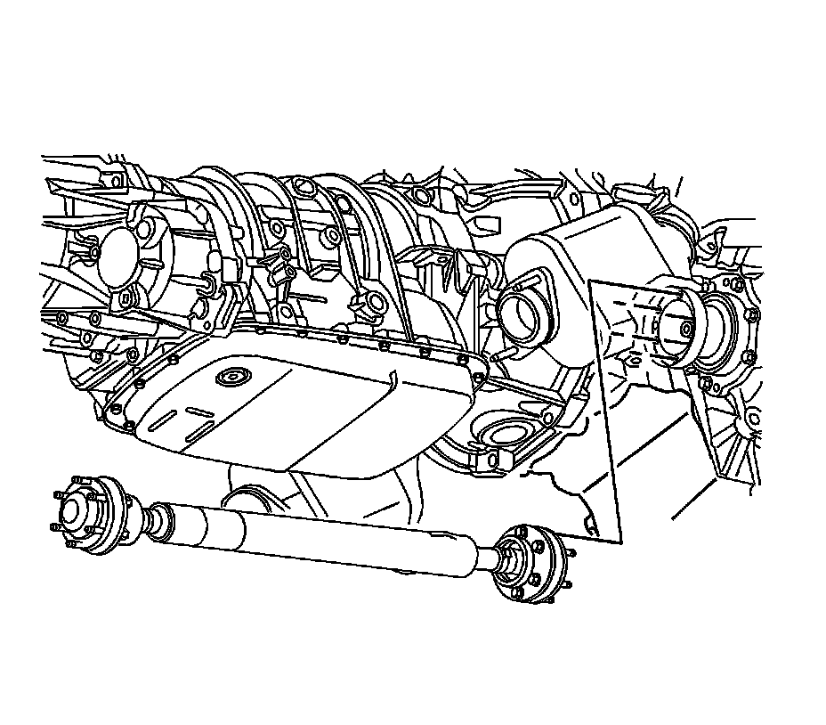

Front Propeller Shaft Replacement
Front Propeller Shaft Replacement
Removal Procedure
1. Raise and support vehicle. Refer to Lifting and Jacking the Vehicle (Service and Repair) .
2. Remove the propeller shaft heat shield. Refer to Shield Replacement (Shield Replacement) .
Important: Reference mark the location of the propeller shaft constant velocity (CV) joint to the transfer case flange.
3. Remove the propeller shaft CV joint-to-differential flange bolts.

4. Install a flat-bladed tool into the notch on the differential flange.
5. Using a flat-bladed tool, carefully move the propeller shaft toward the rear of the vehicle in order to release the propeller shaft CV joint from the differential pinion flange.
6. Remove the propeller shaft CV joint-to-transfer case flange bolts.
7. Install a flat-bladed tool into the notch on the transfer case flange.
8. Using a flat-bladed tool, carefully move the propeller shaft toward the front of the vehicle and remove the propeller shaft from the transfer case flange.

9. Inspect the propeller shaft for the following conditions:
* Rotational movement between the CV joint (2) and the propeller shaft tube (1)
* Grease leaking from the CV joints
* Damage to the CV joints
* Damage to the CV seals
* Binding of either CV joint
10. If any of the conditions are found, replace the front propeller shaft.
Installation Procedure

Important: Ensure that the coned end of the propeller shaft CV joint is installed into the transfer case flange.
1. Install the propeller shaft to the transfer case flange.

2. Install the propeller shaft to the differential flange.
3. Inspect the propeller shaft-to-flange bolts. Replace if damaged or worn.
Important: If reusing the propeller shaft-to-flange bolts to ensure proper adhesion and fastener retention, the threads must be free of debris prior to the application of threadlocker.
4. Thoroughly clean the threads using denatured alcohol or equivalent and allow to dry. Apply threadlocker GM P/N 12345493 (Canadian P/N 10953488), or equivalent to the propeller shaft-to-flange bolt. Ensure that there are no gaps in the threadlocker along the length of the filled area of the bolt. Allow the threadlocker to cure approximately 10 minutes before installation.

Notice: Refer to Fastener Notice (Fastener Notice) .
5. Install the propeller shaft CV joint-to-differential flange bolts. Ensure that the crescent washers are in place on each pair of bolts.
Tighten the 6 propeller shaft CV joint-to-differential flange bolts in sequence (1-6) to 40 N.m (29 lb ft).
Important: If reusing the propeller shaft-to-flange bolts, to ensure proper adhesion and fastener retention, the threads must be free of debris prior to the application of threadlocker.
6. Thoroughly clean the threads using denatured alcohol or equivalent and allow to dry. Apply threadlocker GM P/N 12345493 (Canadian P/N 10953488), or equivalent to the propeller shaft to the flange bolt. Ensure that there are no gaps in the threadlocker along the length of the filled area of the bolt. Allow the threadlocker to cure approximately 10 minutes before installation.
7. Install the front propeller shaft coupler-to-transfer case flange bolts. Ensure that the crescent washers are in place on each pair of bolts.
Tighten the 6 propeller shaft CV joint-to-transfer case flange bolts in sequence (1-6) to 40 N.m (29 lb ft).
Important: Ensure that there is no rotational movement between the CV joint (2) and the propeller shaft tube (1).
8. Install the propeller shaft heat shield. Refer to Shield Replacement (Shield Replacement) .
9. Lower the vehicle.